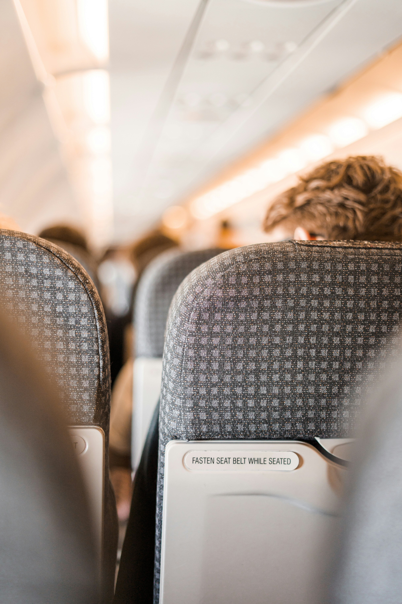
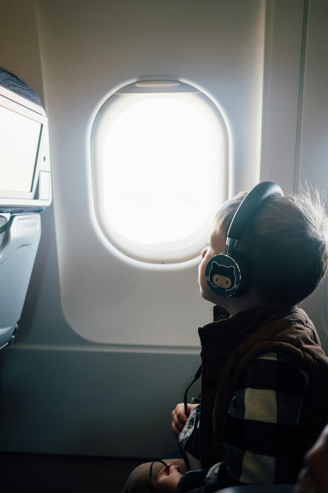
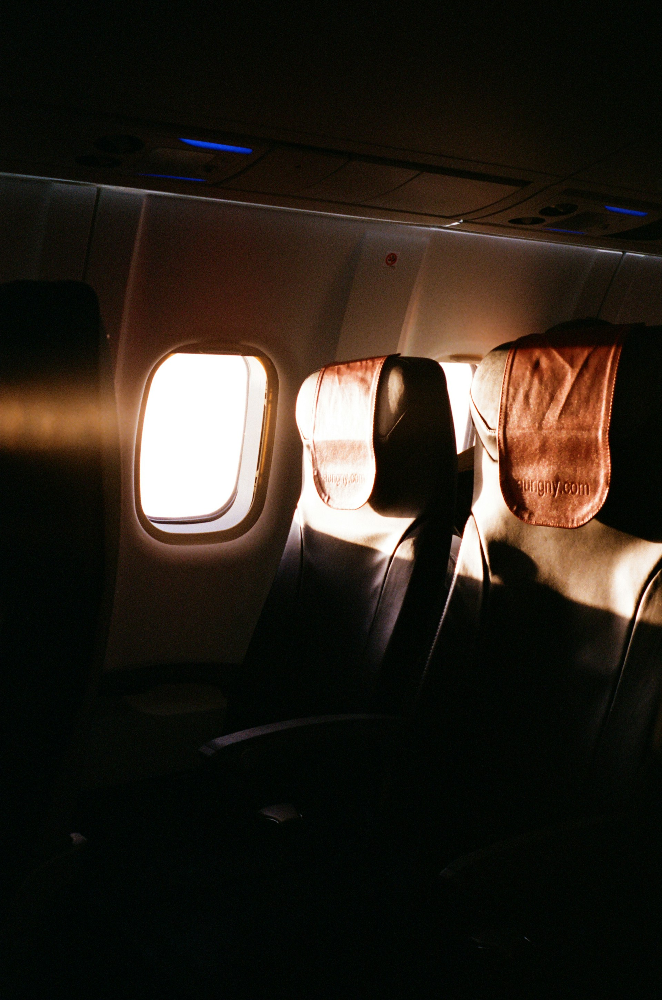
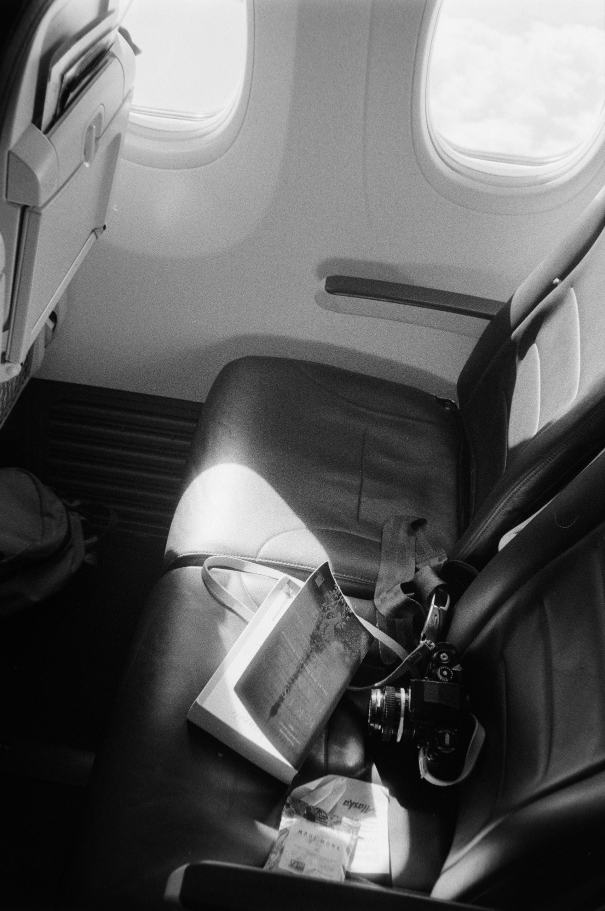

01. Architecting the Micro-Environment
Pamper Your Senses with Bespoke Comfort
Modern transit demands that you become the architect of your own comfort. Rather than relying on standard-issue cabin amenities, curate a tactical wellness kit for your seat pocket. High-end eye shades, cashmere travel blankets, and ergonomic travel pillows block out visual disruptions from over-shoulder reading lights. Pair these with noise-canceling headphones to instantly dissolve engine drone and cultivate a calm, restful sleep environment.


Tactical Hydration Rituals
Altitude is inherently taxing on the body's natural balance. Counteract the drying effects of filtered cabin air by practicing deliberate hydration steps. Secure a premium glass or insulated water flask after passing security check-points, and pack ultra-nourishing botanical lip balms alongside soothing saline gels. Slip a pair of plush, breathable socks into your footwear right at takeoff, allowing your circulation to settle smoothly into the long cruise.
02. Curating Intention and Entertainment
The Distraction-Free Digital Desktop
A continuous transoceanic crossing offers a rare luxury: complete disconnection from daily pings, rings, and digital interruptions. Use this uninterrupted window to write memories, capture business strategies, or catalog personal logs on your device. Ensure your premium entertainment selections, offline playlists, and deep-dive documentaries are fully downloaded to your laptop or tablet prior to boarding the aircraft.

Immersive Destination Integration
The perfect way to collapse hours mid-flight is to fully immerse yourself in the textures of your upcoming destination. Dedicate a segment of the flight to reading up on localized histories, cultural nuances, or architecture. Downloading interactive, bite-sized language tracks onto your mobile setup allows you to practice pronunciation silently, helping you step off the arrival jetway feeling like an integrated local insider.
03. Nourishment & Shared Spaces
Curate Your Palate Intelligently
To preserve your baseline energy levels across global time zones, bypass high-sodium packaged cabin snacks in favor of custom, energy-dense options. Raw artisanal nuts, premium protein bars, and dried trail mixes keep hunger pangs completely at bay between curated meal services. Secure softer confections inside protective travel tins to keep them intact, or tuck away organic oatmeal blends to mix with hot water via the hospitality cart for a comforting, warm morning touch down.


Tactful Connections and Family Flow
If you are exploring solo, mid-transit windows open pathways for quiet camaraderie. Bringing an elegant deck of cards can prompt delightful interaction with a neighbor, provided they aren't resting or wearing headphones. If you are navigating the long-haul journey with your children, insulate their experience by assembling custom activities—think luxury sketch books or tactile puzzles—to keep their sensory focus beautifully grounded, happy, and calm.